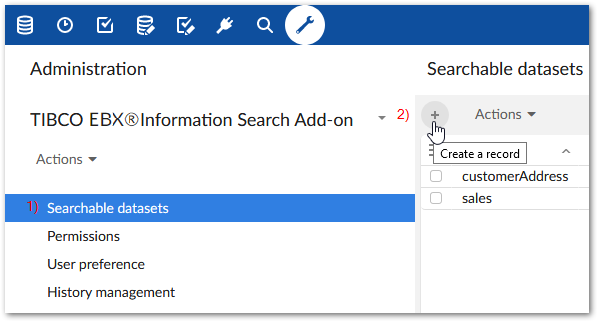
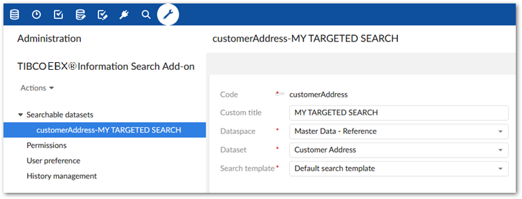
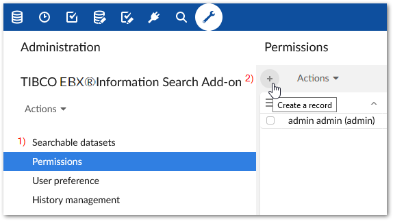
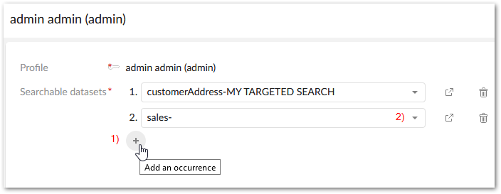

Configuring search
When configuring a targeted search, you create records that:
register searchable datasets with the add-on.
set permissions for profiles that determine the datasets targeted when users run searches. The permissions you set in the add-on do not conflict with existing EBX® permissions. A targeted search only returns results from the tables and fields that users have sufficient permission to view.
After you complete configuration, users can perform a targeted search via the main EBX® menu. The scope of a targeted search is always the same. This differs from the EBX® quick search feature that returns data from the location where a search is run. For example, datasets A, B, and C are registered with the add-on and permissions link the Steward profile with A and C. It makes no difference as to the users current dataset location. When a user in the Steward profile runs a targeted search, they will get results only from datasets A and C.
To configure targeted search:
Register searchable datasets with the add-on:

Open the Administration panel and navigate to Data quality & analytics > TIBCO EBX® Information Search Add-on > Searchable datasets.
Select the '+' icon to create a new record. Empty fields display.
Enter a unique identifier in the Code field.
Use the Dataspace and Dataset menus to specify the dataset you want to make available for targeted searches.
Optionally, enter text in the Custom title field to add a title that displays at the top of the search page.
Use the Search template menu to specify the template used when searching this dataset. The list of available templates depends on search templates configured for the data model. At a minimum the Default search template is available which uses default search strategies based on field data types. See the EBX® documentation for more information about search strategies and templates.
The following shows a completed record.

Set permissions to determine search scope:

Select the Permissions table.
Select the '+' icon to create a new record. Empty fields display. As described in the next steps, this record is used to link a user profile with one or more datasets that set the scope for a targeted search.
Use the Profile menu to specify the desired user profile or role. When this profile runs a targeted search, it will include the datasets you specify in the following step.
Add datasets using the Searchable datasets group:

Click the '+' icon to include an additional dataset.
Use the drop-down to select the desired dataset.
After saving and closing, the targeted search icon will now be available for the user, or users included in the profile.